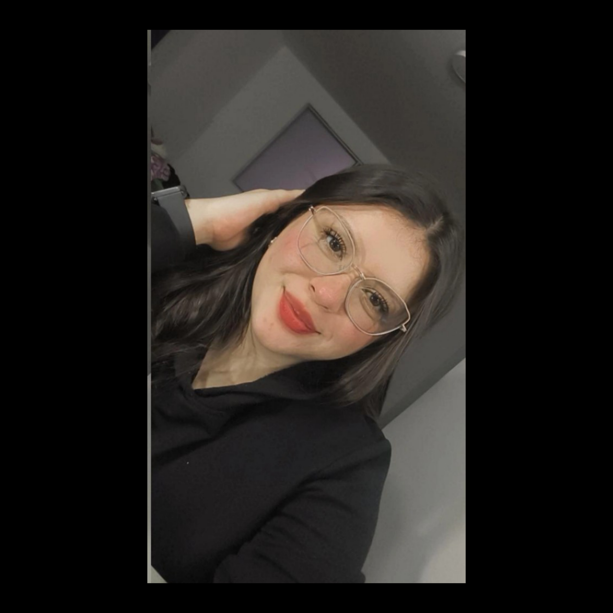
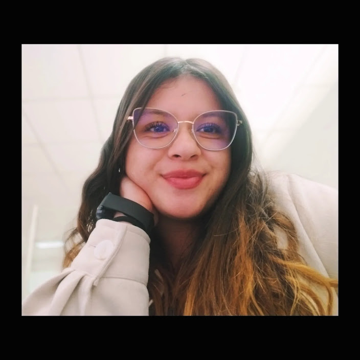
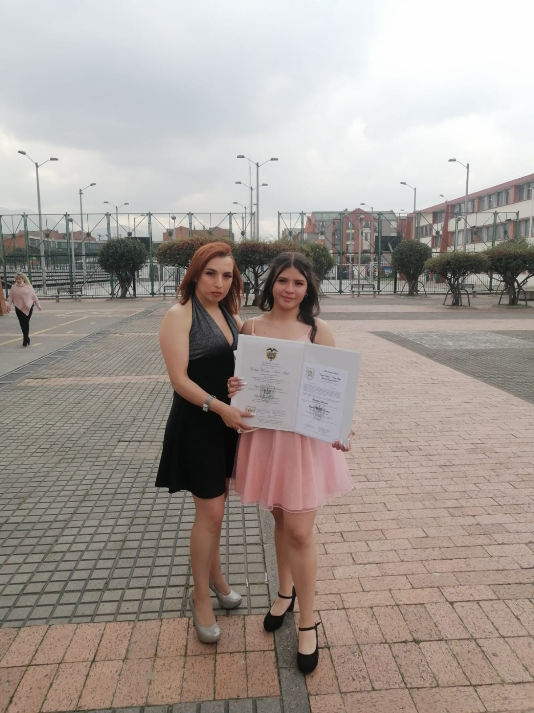
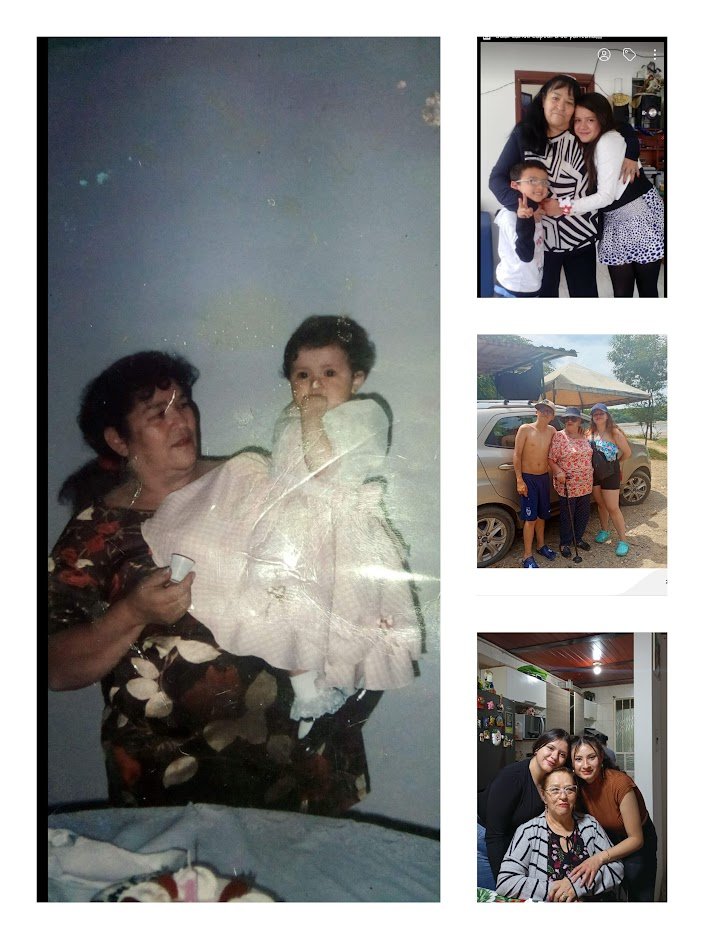
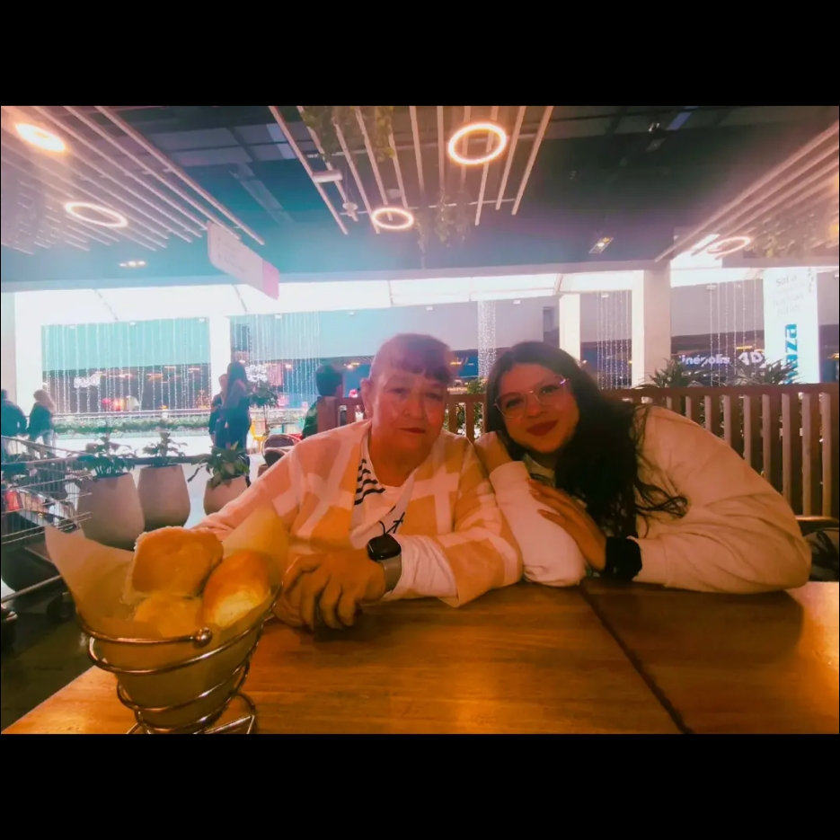
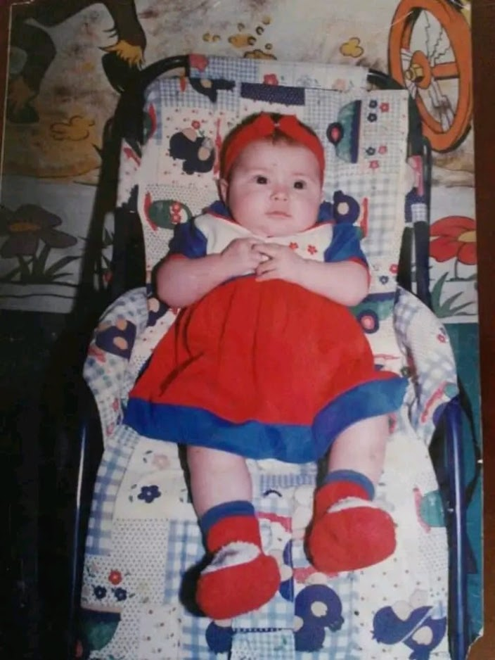
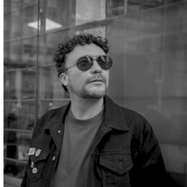

Soy estudiante de Ingeniería de Sistemas y me apasiona aprender constantemente sobre tecnología, innovación y desarrollo personal. Me interesa crecer tanto a nivel profesional como personal, fortaleciendo mis conocimientos cada día y adquiriendo nuevas habilidades que me permitan enfrentar los retos del mundo digital. Me gusta aprender cosas nuevas todos los días, ya que considero que el conocimiento es fundamental para alcanzar mis metas y construir un mejor futuro. Para mí, estudiar es muy importante porque representa una oportunidad de superación, crecimiento y cumplimiento de mis sueños. Uno de mis principales objetivos es crear mi propia empresa de ciberseguridad, donde pueda aportar soluciones tecnológicas que ayuden a proteger la información y los sistemas de las personas y las organizaciones. Me interesa especialmente el área de la seguridad informática, la protección de datos y la innovación tecnológica. Trabajo y estudio al mismo tiempo, lo cual me ha permitido desarrollar habilidades como la disciplina, la responsabilidad, la organización y la perseverancia. Estas experiencias han fortalecido mi carácter y mi compromiso con mis metas profesionales. Me considero una persona dedicada, comprometida con su futuro, con deseos de seguir aprendiendo y de contribuir positivamente a la sociedad a través de la tecnología.

Mi vida ha estado marcada por diferentes experiencias que han formado mi carácter y mi manera de ver el mundo. Desde pequeña fui criada principalmente por mi abuela, quien ha sido una de las personas más importantes en mi vida. Gracias a ella aprendí valores como el respeto, la responsabilidad, la fortaleza y la importancia de nunca rendirse ante las dificultades. A lo largo de mi vida he pasado por momentos difíciles, derrotas y situaciones que me han puesto a prueba, pero cada una de esas experiencias me ha enseñado a levantarme con más fuerza. He aprendido que los errores no son fracasos, sino oportunidades para crecer, madurar y mejorar como persona. Mi familia es el pilar fundamental de mi vida. El apoyo de mi mamá, mi abuela y mi hermano ha sido esencial en cada paso que doy, ya que son mi motivación para seguir adelante y esforzarme por construir un mejor futuro. Gracias a ellos he aprendido el valor del amor, la unión y la perseverancia. Trabajo y estudio al mismo tiempo, lo que me ha ayudado a desarrollar disciplina, compromiso y organización. Este proceso no ha sido fácil, pero me ha permitido crecer personal y emocionalmente, demostrando que con esfuerzo y dedicación se pueden superar los obstáculos. Me considero una persona fuerte, perseverante y luchadora, que a pesar de las caídas siempre busca levantarse y seguir adelante. Cada experiencia vivida ha contribuido a formar la persona que soy hoy y me impulsa a continuar trabajando por mis sueños y metas.





Mi cantante favorito
